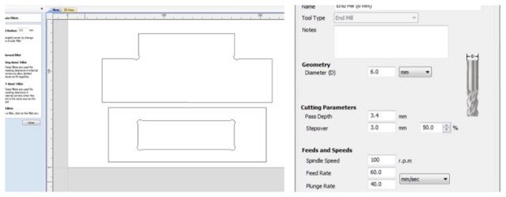

week 8: computer-controlled machining
Glow-in-the-dark table
This week our task was to use the CNC milling machine to "make something big"
I decided to design a coffee table. I found inspiration in these mid-century models:
I started by sketching my model on Rhino. I tried out several shapes and ended up going with an oval table board with criss-crossing legs.

LASER CUTTING
Before I started cutting the whole piece in the milling machine, I laser cut a mini table in cardboard, too see if the pieces fit well together. Everything looked ok.
LUMINESCENT PIGMENT
I wanted to engrave a pattern on the table top (at a depth of about 2mm) and fill it with resin, in which I would mix a luminiscent non-toxic pigment I recently found in this instructable.
This is the glow-in-the-dark pigment.
I had milled a crochet pattern on a big slab of wood a few months, so I decided to use it as a testboard for the luminescent resin, before pouring it into my table top.
For the luminescent pigment to be more powerful and long-lasting, one should mix it with a transparent material. I used polyester resin for my test (a very smelly and eco-unfriendly filler I am hoping to avoid in the future). I added 20% (in volume) of luminiscent pigment to the resin and it immediately turned into a deep coral blue.
I slowly poured the mix into the wood pockets, doing it from as high up as possible, to diminish bubble formation. I filled the smaller wood pockets directly with the mixing stick, to avoid overspill. I then covered the surface with a dark plastic [polyester doesn't like air and light while curing]. It took approximately 24 hours to cure, but this process can be dramatically faster if one adds a larger percentage of catalyst (which is actually a hardener) to the mix (I added only about 1%). Here are some images of the process:
Once it was cured, it was time for the luminescence test. I put it by the window for a couple of hours and then brought it to a dark room. The pigments showed a pretty powerful and long-lasting glow-in-the-dark capacity!
MILLING
I was ready to focus on milling the plywood board. I had a huge sheet with a thickness of 30mm to work with, so I started by cutting it with a circular saw at the milling machine's bed size (1900mm x 900mm).
Then I used a small piece of plywood sheet to mill a test of the table's pocket. I opened my .dxf file in Aspire.
I selected my millbit (6mm) and added some dogbone fillets to the pocket.
Then I added some tabs, to keep the piece from flying out of the plywood board.
Aspire calculated the toolpath:
Time to mill the test pocket!
The first pocket was way too loose, so I tried milling it again, this time with zero tolerance. It was cool to see the mill work around the plywood's profile.
I exported my Rhino table model to a .dxf file, and was ready to start milling my table.
Firstly, I milled the four pockets on the bottom part of my table:
Because I had experienced quite a bit of chipping on the top layer of the plywood board when I was milling my pocket tests, I decided to start by doing a first profile of the pieces at a shallow depth (1mm) and low speed. This worked out really well and the top cut came out very neat.
Milling parameters:
Mill bit - 6mm
Stepover - 3mm
Path depth - 3.4mm
Feed rate - 60mm/sec (starting with 10% of this value and the progressilvely increasing it to 100%)
Spindle Rotation - 11,000
I used 3D tabs to keep the pieces attached to the board. These mill faster than regular tabs, as the mill doesn't need to change the axis and go out and back in again to do them:
Once my all parameters were set up, I saved the G-code and opened it in Motion4Cam, the fablab's shopbot software.
Milling the full table took only about 1h50m. After it was done, I gave it some finishing touches: sanding the edges, cutting out the tabs and applying some vieux-chaine to darken the wood a bit.
I then went on to mount the legs:
Here is the final result:
Next steps:
1 - Re-mill the table legs (they nedd to be a good 10cm taller, so the table doens't look more like a skateboard)
2 - Mill the crochet pattern on the table top and fill it with the luminescent resin